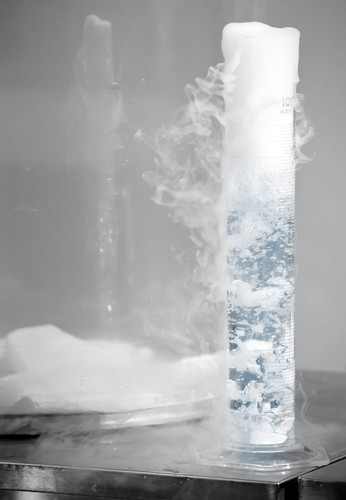

Dipartimento di Psicologia Generale | Università di Padova

Vai al contenuto
Unipd.it Dipartimenti Biblioteche Rubrica Webmail Uniweb SIT Area RiservataDipartimento di Psicologia Generale
SCEGLI ILTUO PROFILO SEARCH Menu ENG CLOSE
Dipartimento
Salta al menu corsi Storia Struttura organizzativa Commissioni, deleghe, gruppi Persone Sedi e strutture Regolamento Ospiti internazionali Calendario accademicoCorsi
Salta al menu ricerca Corsi di laurea triennale Corsi di laurea magistrale Dottorati di ricerca Scuole di specializzazione Master Aggiornamento e Formazione Professionale Esami di StatoRicerca
Salta al menu servizi Bandi di ricerca Linee di ricerca Gruppi di ricerca Centri di ricerca Laboratori Corsi Avanzati per la Ricerca Scientifica (CARS) Progetto Dipartimenti di Eccellenza Qualità della ricerca Prenotazione laboratori Terza MIssione Moodle Ricerca e LaboratoriServizi
Salta al menu international Servizi per studenti Servizi per docenti Biblioteca Metelli Liripac - NeuroVis.U.S. Liripac - Servizio di Psicologia dell’Invecchiamento e della longevità Liripac - PsyMed SAP - Counseling e Psicoterapia Verifica credito e stampa da web Filr (cartelle condivise) WiFi - Eduroam Video library Archivio newsIl SARS-CoV-2 può influenzare il cervello e causare disturbi neuropsicologici
Articolo su Neurological Sciences di Konstantinos Priftis, Massimo Prior, Leonardo Meneghetti, Teresa Mercogliano e Matteo Bendini
Structural and functional brain asymmetries in the early phases of life: a scoping review
Pubblicazione sulla rivista Brain Structure and Function di Patrizia Bisiacchi ed Elisa Cainelli
Come è cambiato il mio sonno? La qualità del sonno e le credenze disfunzionali sul sonno in giovani e anziani prima e durante il lockdown
Studio di Enrico Sella, Elena Carbone, Enrico Toffalini, Erika Borella pubblicato sulla rivista Sleep Medicine
Progetto IRIS: La comunicazione di morte inaspettata e violenta
Cosa si intende con morte violenta e inaspettata? Si tratta di un evento che sopraggiunge per cause esterne e che colpisce senza preavviso; può essere dovuto a suicidio, omicidio, incidenti sul lavoro, incidenti stradali, catastrofi naturali
“Usare il cervello” Gettare le basi (cognitive) per la terza età
Intervista per il Corriere Salute, Corriere della Sera, di Erika Borella
Impatto del lockdown su concentrazione, memoria e salute psicologica: Quali effetti e quali fattori di rischio?
Lo studio ‘Cognitive and mental health changes and their vulnerability factors related to COVID-19 lockdown in Italy’ (Eleonora Fiorenzato, Silvia Zabberoni, Alberto Costa, Giorgia Cona), appena pubblicato su PLOSONE, ha cercato di rispondere proprio a tali quesiti.
Norme di comportamento da tenere negli ambienti universitari
scopri...
DIPARTIMENTO DI PSICOLOGIA GENERALE
Didattica Ricerca Dipartimento Progetto Dipartimenti di Eccellenza I Dipartimenti di eccellenza rappresentano un intervento innovativo e di forte sostegno finanziario. L'intervento ha l'obiettivo di individuare e finanziare, con cadenza quinquennale e nell'ambito delle 14 aree CUN, i migliori 180 Dipartimenti delle Università statali italiane. Biblioteca di Psicologia "Fabio Metelli" Ospiti internazionali Scuola di PsicologiaNEWS ED EVENTI
Eventi
TALK SERIES ANNOUNCEMENT: Aphasia and Linguistics
Dal 26.02.2021 al 11.03.2021Emeritus professor Carlo SemenzaMarch 10th, 2021 at 11:30 amZoom link: https://unipd.zoom.us/j/2576207231
LeggiSeminari
8 marzo diffuso a Psicologia
Lezioni sul tema parità di genere e pari opportunità aperte a tutti con frequenza online
LeggiNotizie
Fase 4.0 : Mooc online di qualità dopo la rivoluzione Covid (Prof. Mauro Calise)
LINK MEDIASPACE
https://mediaspace.unipd.it/media/Fase+4.0+A+Mooc+online+di+qualit%C3%A0...
Link ai prossimi webinar Federica CRUI
https://www.federica.eu/elearning-webinar-crui-federica/
Notizie
Hemispheric specialization in spatial versus ordinal processing in the day-old domestic chick (Gallus gallus)
The intriguing similarity among species in representing numerosity in space from left to right may depend on a right hemisphere dominance in processing spatial information. We assessed the role of each hemisphere in spatial versus ordinal–numerical processing by testing chicks binocularly or monocul
LeggiBandi
Visualizza l'elenco di tutti i bandi del dipartimento
LeggiEventi
Visualizza tutti gli eventi ospitati dal dipartimento
LeggiNotizie
Visualizza tutte le notizie del dipartimento
LeggiSeminari
Visualizza i seminari ospitati dal dipartimento
Leggi Moodle Ricerca e Laboratori blankDipartimento di Psicologia Generale
Amministrazione trasparente Area riservata StaffCONTATTI
via Venezia, 8Telefono 049 827 6485
Fax 049 827 6547 Email posta elettronica certificata (PEC) dipartimento.dpg@pec.unipd.it Staff WEB webmaster.dpg@unipd.it © 2021 Università di Padova - Tutti i diritti riservati P.I. 00742430283 C.F. 80006480281 Informazioni su questo sito Privacy policy